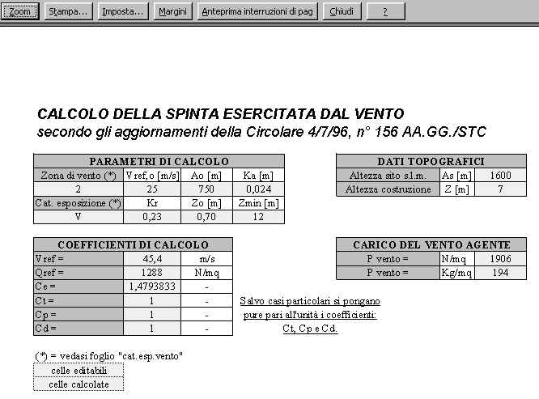

Mediante i normali comandi excel si può attivare il preview di stampa oppure comandare direttamente la stampa. Si riporta un esempio di anteprima per calcolo del vento in funzione dei parametri adottati:
